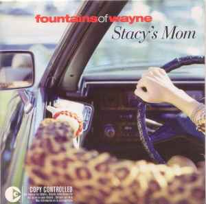
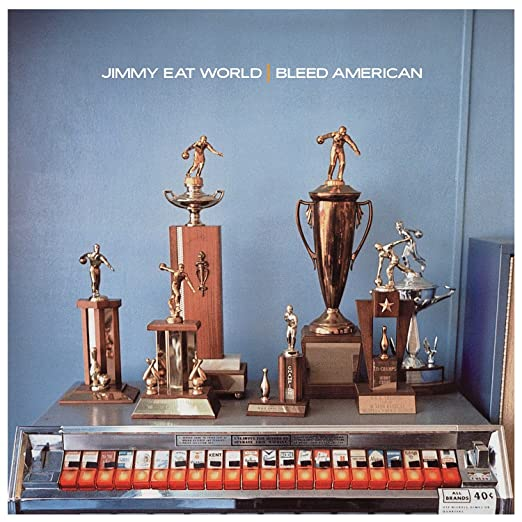
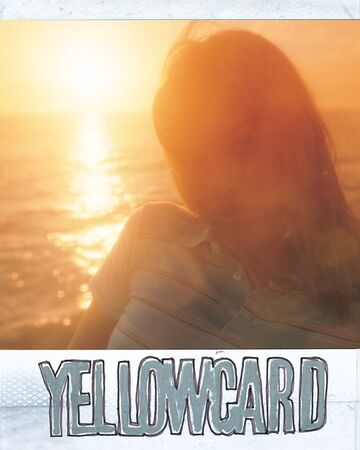
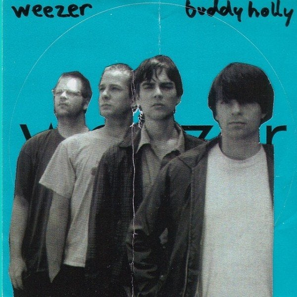
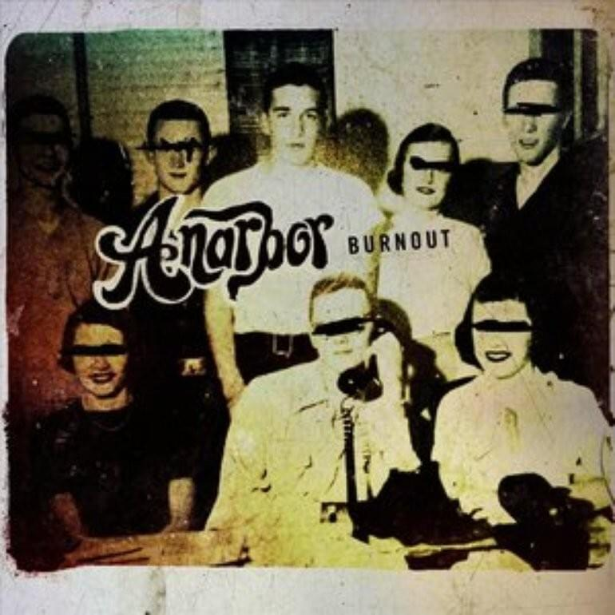
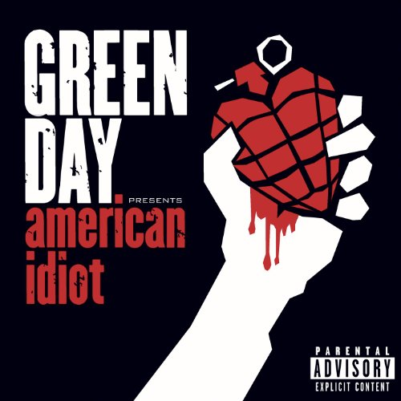
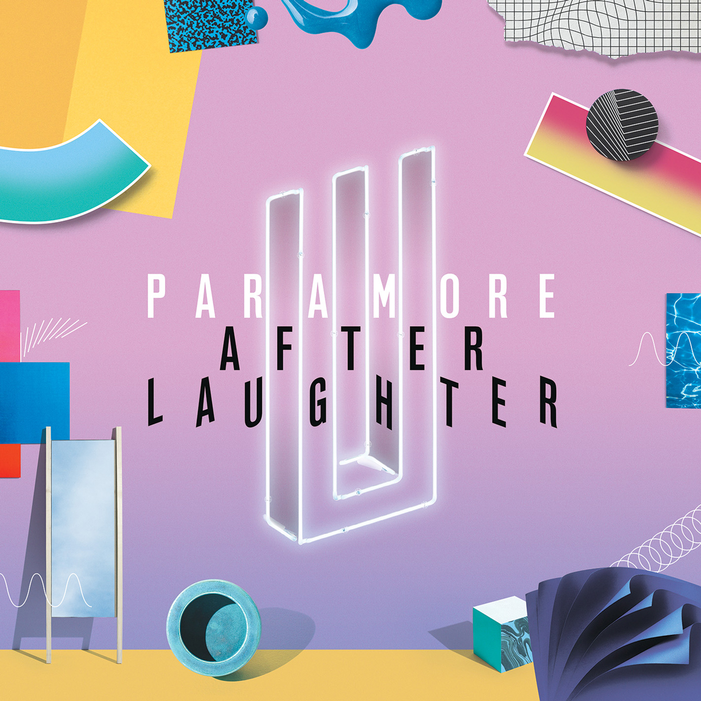
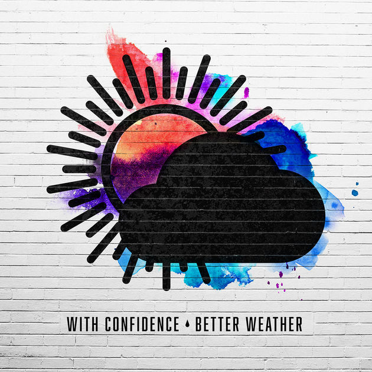

Summer Soundtrack
The Middle
Ocean Avenue
All The Small Things
Buddy Holly
Black Butterflies and Deja Vu
18
American Idiot
Hard Times
Voldemort
Stacy's Mom
Lyrics:
Stacy's mom has got it goin' on
Stacy's mom has got it goin' on
Stacy's mom has got it goin' on
Stacy's mom has got it goin' on
Stacy, can I come over after school?
(After school)
We can hang around by the pool
(Hang by the pool)
Did your mom get back from her business trip?
(Business trip)
Is she there, or is she trying to give me the slip?
(Give me the slip)
You know, I'm not the little boy that I used to be
I'm all grown up now
Baby, can't you see?
Stacy's mom has got it goin' on
She's all I want
And I've waited for so long
Stacy, can't you see?
You're just not the girl for
I know it might be wrong but
I'm in love with Stacy's mom
Stacy's mom has got it goin' on
Stacy's mom has got it goin' on
Stacy, do you remember when I mowed your lawn?
(Mowed your lawn)
Your mom came out with just a towel on
(Towel on)
I could tell she liked me from the way she stared
(The way she stared)
And the way she said
"You missed a spot over there"
(A spot over there)
And I know that you think it's just a fantasy
But since your dad walked out
Your mom could use a guy like me
Stacy's mom has got it goin' on
She's all I want
And I've waited for so long
Stacy, can't you see?
You're just not the girl for me
I know it might be wrong but
I'm in love with Stacy's mom
Stacy's mom has got it goin' on
(she's got it going on)
She's all I want and I've waited for so long
(waited and waited)
Stacy, can't you see?
You're just not the girl for me
I know it might be wrong
I'm in love with
Stacy's mom, oh, oh
(I'm in love with)
Stacy's mom, oh, oh
(Wait a minute)
Stacy, can't you see?
You're just not the girl for me
I know it might be wrong but
I'm in love with Stacy's mom
The Middle
Lyrics:
Hey, don't write yourself off yet
It's only in your head, you feel left out
Or looked down on
Just try your best
Try everything you can
And don't you worry what they tell themselves
When you're away
It just takes some time
Little girl, you're in the middle of the ride
Everything, everything'll be just fine
Everything, everything'll be alright, alright
Hey, you know they're all the same
You know you're doing better on your own (on your own)
So don't buy in
Live right now
Yeah, just be yourself
It doesn't matter if it's good enough (good enough)
For someone else
It just takes some time
Little girl, you're in the middle of the ride
Everything, everything'll be just fine
Everything, everything'll be alright, alright
It just takes some time
Little girl, you're in the middle of the ride
Everything, everything'll be just fine
Everything, everything'll be alright, alright
Whoo!
Hey, don't write yourself off yet
It's only in your head, you feel left out (feel left out)
Or looked down on
Just do your best (just do your best)
Do everything you can (do everything you can)
And don't you worry what their bitter hearts (bitter hearts)
Are gonna say
It just takes some time
Little girl, you're in the middle of the ride
Everything, everything'll be just fine
Everything, everything'll be alright, alright
It just takes some time
Little girl, you're in the middle of the ride
Everything, everything'll be just fine
Everything, everything'll be alright
Ocean Avenue
Lyrics:
There's a place off Ocean Avenue
Where I used to sit and talk with you
We were both 16 and it felt so right
Sleeping all day, staying up all night
Staying up all night
There's a place on the corner of Cherry Street
We would walk on the beach in our bare feet
We were both 18 and it felt so right
Sleeping all day, staying up all night
Staying up all night
If I could find you now things would get better
We could leave this town and run forever
Let your waves crash down on me and take me away
There's a piece of you that's here with me
It's everywhere I go, it's everything I see
When I sleep, I dream and it gets me by
I can make believe that you're here tonight
That you're here tonight
If I could find you now things would get better
We could leave this town and run forever
I know somewhere, somehow we'll be together
Let your waves crash down on me and take me away
I remember the look in your eyes
When I told you that this was goodbye
You were begging me not tonight
Not here, not now
We're looking up at the same night sky
And keep pretending the sun will not rise
Be together for one more night
Somewhere, somehow
If I could find you now things would get better
We could leave this town and run forever
I know somewhere, somehow we'll be together
Let your waves crash down on me and take me away
All The Small Things

Lyrics:
[Tom DeLonge:]
All the small things
True care, truth brings
I'll take one lift
Your ride, best trip
Always, I know
You'll be at my show
Watching, waiting
Commiserating
Say it ain't so, I will not go
Turn the lights off, carry me home
[Tom DeLonge & Mark Hoppus:]
Na na, na na, na na, na na, na, na
Na na, na na, na na, na na, na, na
Na na, na na, na na, na na, na, na
Na na, na na, na na, na na, na, na
[Tom DeLonge:]
Late night, come home
Work sucks, I know
She left me roses by the stairs
Surprises let me know she cares
Just say it ain't so, I will not go
Turn the lights off, carry me home
[Tom DeLonge & Mark Hoppus:]
Na na, na na, na na, na na, na, na
Na na, na na, na na, na na, na, na
Na na, na na, na na, na na, na, na
Na na, na na, na na, na na, na, na
Say it ain't so, I will not go
Turn the lights off, carry me home
Keep your head still, I'll be your thrill
The night will go on, my little windmill
(Na na, na na, na na, na na, na, na)
Say it ain't so, I will not go
(Na na, na na, na na, na na, na, na)
Turn the lights off, carry me home
(Na na, na na, na na, na na, na, na)
Keep your head still, I'll be your thrill
(Na na, na na, na na, na na, na, na)
The night will go on, the night will go on, my little windmill
Buddy Holly
Lyrics:
What's with these homies dissin' my girl?
Why do they gotta front?
What did we ever do to these guys
That made them so violent?
Woo-hoo, but you know I'm yours
Woo-hoo, and I know you're mine
Woo-hoo, that's for all the time
I look just like Buddy Holly
And you're Mary Tyler Moore
I don't care what they say about us anyway
I don't care 'bout that
Don't you ever fear, I'm always near
I know that you need help
Your tongue is twisted, your eyes are slit
You need a guardian
Woo-hoo, and you know I'm yours
Woo-hoo, and I know you're mine
Woo-hoo, that's for all the time
I look just like Buddy Holly
And you're Mary Tyler Moore
I don't care what they say about us anyway
I don't care 'bout that
I don't care 'bout that
Bang! Bang! Knock on the door
Another big bang, get down on the floor
Oh no! What do we do?
Don't look now but I lost my shoe
I can't run and I can't kick
What's a matter, babe, are you feelin' sick?
What's a matter, what's a matter, what's a matter you?
What's a matter, babe, are you feelin' blue? Oh-oh!
That's for all the time
That's for all the time
I look just like Buddy Holly
And you're Mary Tyler Moore
I don't care what they say about us anyway
I don't care 'bout that
I don't care 'bout that
I don't care 'bout that
I don't care 'bout that
Black Butterflies and Deja Vu
Lyrics:
What, what would you say
If you could say
Everything you needed to
To the one you needed to?
You flash like a setting sun
You come around, I come undone
Can't find the sound under my tongue when I look at you
I lose my voice when I look at you
Can't make a noise though I'm trying to
Tell you all the right words
Waiting on the right words
Just another lovesick afternoon
Black butterflies and déjà vu
Hoping for the right words
Waiting for the right words
Just yesterday north of LA
I couldn't help but think of you
Every time I think of you
You crash like a rolling wave
You come around I lose my brain
Can't find the sound under my tongue when I look at you
I lose my voice when I look at you
Can't make a noise though I'm trying to
Tell you all the right words
Waiting on the right words
Just another lovesick afternoon
Black butterflies and déjà vu
Hoping for the right words
Waiting for the right words
've been searching for the right words, right words
But I, I can't even find a an echo
Don't you let go
There are only twenty six letters I can use
Just to tell you I won't let go
Don't you let go
I lose my voice when I look at you
Can't make a noise though I'm trying to
Tell you all the right words
Waiting on the right words
Just another lovesick afternoon
Black butterflies and déjà vu
Hoping for the right words
Waiting for the right words
I lose my voice when I look at you
Can't make a noise though I'm trying to
Tell you all the right words
Waiting on the right words
Just another lovesick afternoon
Black butterflies and déjà vu
Hoping for the right words
Waiting for the right words
18
Lyrics:
Eighteen, crazy
pulled up in your daddy's car
you wanna move in with me
guess we're off to a heavy start
Should've seen this coming from a mile away
eighteen, crazy
I know what you want from me
I know what you want from me
So if you wanna piss off your parents
date me to scare them
show them you're all grown up
If long hair and tattoos are what attract you
baby then you're in luck
and I know it's just a phase
you're not in love with me
you wanna piss off your parents, baby
piss off your parents
that's alright with me
You know I'm broke
so you pulled out your daddy's card
I drink, I smoke
you ate it up from the very start
Should've seen this coming from a mile away
I'll play your game
I know what you want from me
I know what you want from me
So if you wanna piss off your parents
date me to scare them
show them you're all grown up
If long hair and tattoos are what attract you
baby then you're in luck
and I know it's just a phase
you're not in love with me
you wanna piss off your parents, baby
piss off your parents
that's alright with me
I know what you want from me
So if you wanna piss off your parents
date me to scare them
show them you're all grown up
If long hair and tattoos are what attract you
baby then you're in luck
and I know it's just a phase
you're not in love with me
and I know it's just a phase
you're not in love with me
You wanna piss off your parents, baby
piss off your parents
that's alright
You wanna piss off your parents, baby
piss off your parents
that's alright with me
American Idiot
Lyrics:
Don't wanna be an American idiot!
Don't want a nation under the new media
And can you hear the sound of hysteria?
The subliminal mind fuck America!
Alright!
Welcome to a new kind of tension
All across the alien nation
Where everything isn't meant to be okay
Television dreams of tomorrow
We're not the ones who're meant to follow
For that's enough to argue!
Well, maybe I'm the f***** America
I'm not a part of a redneck agenda(alright!)
Now everybody do the propaganda
And sing along to the age of paranoia
Alright!
Welcome to a new kind of tension
All across the alienation
Where everything isn't meant to be okay
Television dreams of tomorrow
We're not the ones who're meant to follow
For that's enough to argue
Don't want to be an American idiot
One nation controlled by the media
Information age of hysteria
It's calling out to idiot America
Welcome to a new kind of tension
All across the alienation
Where everything isn't meant to be okay
Television dreams of tomorrow
We're not the ones who're meant to follow
For that's enough to argue
Hard Times
Lyrics:
All that I want
Is to wake up fine
Tell me that I'm alright
That I ain't gonna die
All that I want
Is a hole in the ground
You can tell me when it's alright
For me to come out
gonna make you wonder why you even try
(Hard times) gonna take you down and laugh when you cry
(These lives) and I still don't know how I even survive
(Hard times)
(Hard times)
And I gotta get to rock bottom
Walking around
With my little rain cloud
Hanging over my head
And it ain't coming down
Where do I go?
Gimme some sort of sign
You hit me with lightning
Maybe I'll come alive
gonna make you wonder why you even try
(Hard times) gonna take you down and laugh when you cry
(These lives) and I still don't know how I even survive
(Hard times)
(Hard times)
And I gotta hit rock bottom
Tell my friends I'm coming down
We'll kick it when I hit the ground
Tell my friends I'm coming down
We'll kick it when I hit the ground
When I hit the ground
When I hit the ground
When I hit the ground
When I hit the ground
gonna make you wonder why you even try
(Hard times) gonna take you down and laugh when you cry
(These lives) and I still don't know how I even survive
(Hard times) (hard times)
(Hard times) (hard times)
gonna make you wonder why you even try
(Hard times) gonna take you down and laugh when you cry
(These lives) and I still don't know how I even survive
(Hard times) (hard times)
(Hard times)
And I gotta get to rock bottom
Voldemort
Lyrics:
I remember the first night that she said
"Oh, maybe I can't do this on my own."
And despite all the reassurances and reoccurrences, you will not be alone
And I know that you're holding out for better weather
And I can't promise you that I'll be round forever
If there's one thing I know it's that we're good together
(If there's one thing I know it's that we're good together)
And I will try to hold you up through those times when you are gone
Despite the weather, it gets better
You won't do this alone (do this alone)
I remember the first night that she went
To find her little place inside this world
I won't forget the way she broke her tape down
She needed it now
She ran into it all
And I know that you're holding out for better weather
And I can't promise you that I'll be round forever
If there's one thing I know it's that we're good together
(If there's one thing I know it's that we're good together)
And I will try to hold you up through those times when you are gone
Despite the weather, it gets better
You won't do this alone